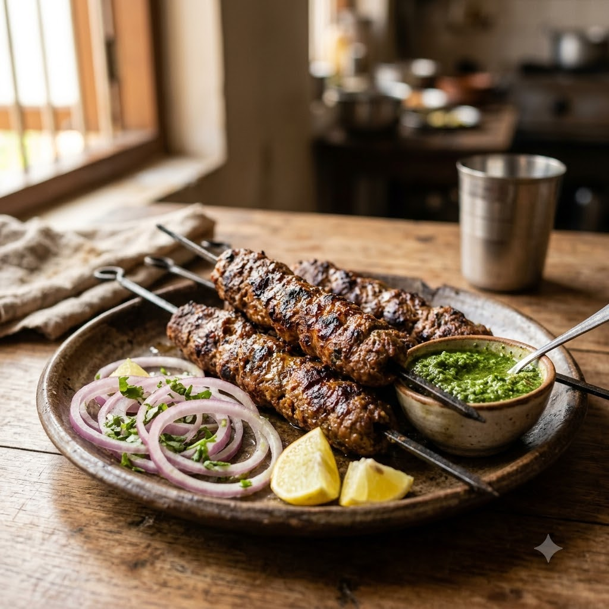

Mutton Seekh Kebab

Mutton Seekh Kebab
Airfryer – Grill 190°C 15 min — Serves 4
Prep ahead: For best texture, mix and knead the kebab mixture, then rest it in the fridge for 25 minutes before shaping.
Ingredients
- 500g minced mutton
- 1 small onion, finely chopped
- 1 tbsp ginger-garlic paste (adrak-lehsun paste)
- 1 green chilli (hari mirch), chopped
- 1 tsp garam masala
- 1 tbsp roasted gram flour (besan)
- 2 tbsp chopped coriander (dhania)
- Salt to taste
Method
1Preheat: Preheat the Airfryer to 190°C for 4 minutes before adding the food to the basket.
2Mix all ingredients thoroughly and knead until the mince binds together.
3Shape into sausage-like kebabs around skewers or by hand.
4Place in the basket, spaced apart, and grill at 190°C for 15 minutes, turning halfway.
5Rest for a few minutes before serving with mint chutney.